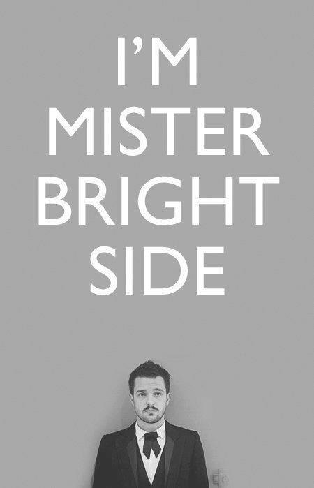
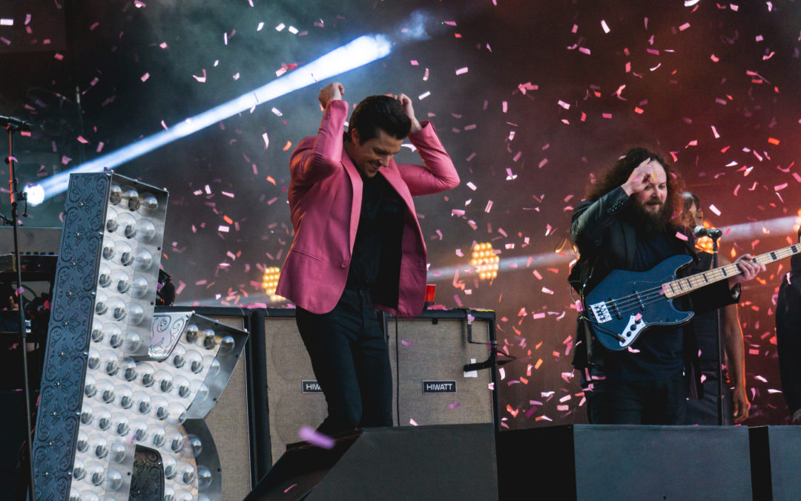

 El 19 de agosto de 2003, la canción «Mr. Brightside» fue estrenada en el programa del DJ Zane Lowe a través de BBC Radio 1 en el Reino Unido. 1 Luego, The Killers viajaron a Londres e hicieron cuatro conciertos en cuatro noches. El 29 de septiembre de 2003, la canción «Mr. Brightside» fue lanzada en un número limitado de CD y vinilos en el Reino Unido, obteniendo críticas positivas de la canción y de los conciertos. Como resultado de los rumores generados en el Reino Unido, la banda, al regresar a Estados Unidos, fue invitada a tocar en la ASCAP CMJ Music Marathon en Nueva York.12 Una variedad de sellos discográficos se vieron interesados en el grupo, pero finalmente Island Def Jam fue escogido.2
 La banda terminó de grabar Hot Fuss en noviembre de 2003 junto a Jeff Saltzman. Decidieron no cambiar los demos grabados anteriormente ya que sentían una mayor espontaneidad, cosa que en las nuevas grabaciones no sucedía. Poco después, volvieron a Londres para telonear a British Sea Power y para terminar de mezclar el álbum junto a Alan Moulder. Durante la primera parte de 2004, recorrieron el Reino Unido y Estados Unidos siendo teloneros de Stellastarr; además, Morrissey los escogió para que abrieran en algunas de las fechas que él tenía en Estados Unidos. La primera gira propia de la banda comenzó en el Reino Unido en mayo de 2004. Durante la primavera y el verano boreal del mismo año, la lista de canciones interpretadas en festivales de Europa y de Norteamérica fue elogiada, lo que ayudó a aumentar la creciente base de fanáticos de The Killers.3
The Killers lanzaron su álbum debut, Hot Fuss, en junio de 2004 en el Reino Unido, a través de la discográfica Lizard King, y en Estados Unidos, a través de Island Records.4 Recibió críticas principalmente favorables.5 Lo extenso de la gira, el éxito tras las nominaciones de los sencillos «Somebody Told Me», «All These Things That I've Done» y «Mr. Brightside» a los Grammy, y que la banda entrara en los diez mejores del Reino Unido y de Estados Unidos,1617 llevó al álbum a convertirse en un gran éxito comercial. Hot Fuss alcanzó el número uno en el Reino Unido en enero de 2005, tan solo siete meses después de su lanzamiento, y ha sido certificado 7 veces con disco de platino en el Reino Unido e Irlanda.6 En cambio, en Estados Unidos, el álbum alcanzó el puesto número siete en abril de 2005 y fue certificado 3 veces con disco de platino.7 Además, alcanzó el primer lugar en Australia, donde fue certificado 3 veces con disco de platino al igual que en Canadá, en Nueva Zelanda también obtuvo disco de platino, mientras que en Alemania, Argentina, Bélgica y Francia obtuvo disco de oro. The Killers fueron nombrados en 2005 como el grupo nuevo que más vendió en el mundo por World Music Awards; de hecho, ese mismo año fueron nominados a tres premios Grammy, entre los que destacaba la nominación de Hot Fuss a mejor álbum de rock. En el Reino Unido ganó un premio NME por mejor banda internacional.
2. Mike Kalil. «IN DEPTH: killers rising» (en inglés). Raview-Journal. Consultado el 15 de mayo de 2010.
3. Dorian Lynskey (29 de junio de 2004). «Glastonbury 2004: Dorian Lynskey on the second day's music | Music | guardian.co.uk» (en inglés). Londres: The Guardian. Consultado el 3 de febrero de 2014.
4. «Let's-start-a-band ad in newspaper created Killers» (en inglés). The Seattle Times. 24 de abril de 2005. Consultado el 15 de mayo de 2010.
5. «Hot Fuss Review» (en inglés). Metacritic. Consultado el 4 de febrero de 2014.
6. Nixon, Chris (5 de abril de 2007). «Can Killers regain form at UCSD? Stay tuned» (en inglés). The San Diego Union-Tribune. Consultado el 4 de febrero de 2014
7. «Thomas Makes Billboard History» (en inglés). Billboard. Consultado el 4 de febrero de 2014.